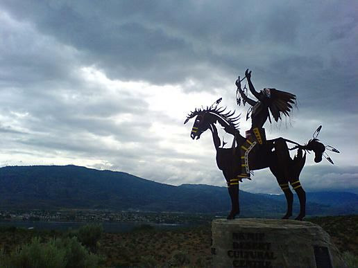

Plongez aux sources de notre projet
Bonjour à tous !
A un mois de notre départ, nous voulions partager avec vous les raisons qui nous ont motivés à étudier la question de l'eau douce pour notre projet d'étude de 7 mois à travers les continents américains.
Tout d'abord, nous avons été attirés par le statut singulier de cette ressource. Quotidiennement indispensable, l'eau douce est omniprésente dans nos vies. Nous avons besoin de 2 à 2.5L d'eau par jour (aliments inclus), elle compose 65% de notre corps, 70% de son utilisation est destinée à notre agriculture. Sa présence façonne les villes, les pays, les chaînes de montagne, les biosphères... Aucune personne ne peut ignorer son importance fondamentale et ainsi, elle a acquis partout une puissance symbolique inégalée : sa vocation purificatrice se retrouve de la danse de la pluie des indiens Cherokee aux rituels des trois grands monothéismes.

En bref, vous l'aurez compris, avec un thème pareil, difficile de ne pas s'épancher dans tous les sens.
C'est pourquoi nous avons décidé de préciser notre sujet d'étude. En tant qu'étudiants en école de commerce, il nous semblait intéressant de poser la question de la gestion et du commerce d'une ressource aussi... indispensable !
Peut-on tirer profit de la distribution de l'eau douce ? Doit-elle être gratuite ?
On serait tenté de répondre un peu rapidement, et par l'affirmative, à cette dernière question. Cependant, on remarque qu'en France par exemple, il n'existe pratiquement plus d'eau "propre à la consommation humaine" à l'état naturel. Comme partout dans le monde, la pollution et le traitement des sols ont peu à peu souillé des eaux auparavant potables à la source.
Il faut donc maintenant les rendre salubres. Il faut des infrastructures, des travailleurs, des technologies et des investissements pour donner accès à une eau saine aux populations. Ces activités induisent nécessairement des dépenses. Qui dit dépenses dit recettes, et qui dit recettes dit... prix. On en revient à la question éthique d'un prix posé sur une ressource vitale.
Doit-on financer l'eau par l'impôt ? Doit-on avoir recours à des entreprises privées ? Doit-elle faire l'objet de politiques globales, locales ? Mais comment répondre à ces questions quand, dans un pays comme les Etat-Unis, les écarts de précipitation s'étalent de un à dix d'un Etat à l'autre... ?
On voit bien la difficulté à répondre catégoriquement à une telle diversité de problèmes. Plus que pour toute autre problématique, il semble que la règle générale soit à exclure dans le cas de celle de l'eau.
C'est pourquoi Grégoire et moi avons choisi de découvrir la problématique de la gestion de cette ressource sous cet angle économique. A l'aide de rencontres, de visites et d'études de situations multiples sur ce continent, nous allons essayer ensemble d'améliorer notre regard sur la gestion de cette ressource, et de vous partager nos conclusions :)
A très bientôt !
Sources (bibliographiques cette fois) :
1. L'avenir de l'eau, Erik Orsenna
2. Centre d'information sur l'eau
3. www.currentresults.com